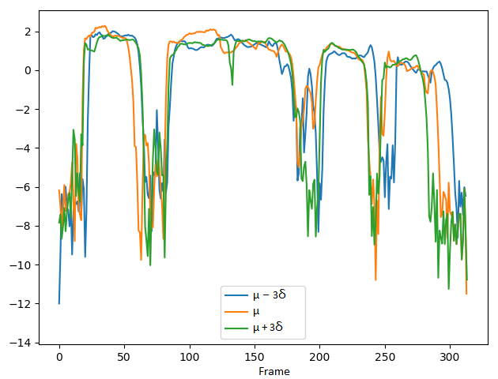

Audio samples from "Effective and direct control of neural TTS prosody by removing interactions between different attributes"
Authors: Xiaochun An, Frank K. Soong, Shan Yang, Lei Xie
Abstract: End-to-end TTS advancement has shown that synthesized speech prosody can be controlled by conditioning the decoder with speech prosody attribute labels. However, to annotate quantitatively the prosody patterns of a large set of training is both time consuming and expensive. To use unannotated data, variational autoencoder (VAE) has been proposed to model individual prosody attribute as a random variable in the latent space. The VAE is an unsupervised approach and the corresponding latent variables are in general correlated with each other. For more effective and direct control of speech prosody along each attribute dimension, it is highly desirable to disentangle the correlated latent variables. Additionally, being able to interpret the disentangled attributes as speech perceptual cues is useful for designing more efficient prosody control of TTS. In this paper, we propose two attribute separation schemes: (1) using 3 separate VAEs to model the real-valued, different prosodic features, i.e., F0, energy and duration; (2) minimizing mutual information between different prosody attributes to remove their mutual correlations, for facilitating more direct prosody control. Experimental results confirm that the two proposed schemes can indeed make individual prosody attributes more interpretable and direct TTS prosody control more effective. The improvements are measured objectively by F0 Frame Error (FFE) and subjectively with MOS and A/B comparison listening tests, respectively. The scatter diagrams of t-SNE also demonstrate the correlations between prosody attributes, which are well disentangled by minimizing their mutual information. Synthesized TTS samples can be found at https://xiaochunan.github.io/prosody/index.html.
1. Comparing the VAE-DR models with the 8-dimensional, 16-dimensional and 32-dimensional zl:
Quality: bad -> good
Text: You've gotten to be kidding me.
VAE-DR (dimensionality=8):
VAE-DR (dimensionality=16):
VAE-DR (dimensionality=32):
Short summary: In the VAE-DR model, increasing the dimensionality of zl improves reconstruction quality. However, this would reduce interpretability and generalization of the latent attribute control. Reducing dimensionality of zl results in poor modeling of latent attributes and weakening precise control of the corresponding speech attributes. Overall, the 16-dimensional zl is most appropriate for capturing the salient attributes for prosody control, although the volume attribute cannot be controlled.
Table 2. FFE and MOS evaluations of VAE-DR systems with different dimensionality of zl, and MOS evaluation with 95% confidence interval.
2. Comparing the controlling performance of pitch attribute with the VAE-DR (dimensionality=16), VAE-PF and VAE-MI models:
We demonstrate the ability to control pitch attribute by changing the pitch dimension while keeping other dimensions fixed. The values set to the pitch dimension are shown in the second row, where μ and σ denote the mean and standard deviation of the pitch dimension, respectively.
Pitch: Low -> High
Text: Can you tell me an example?
Value =
µ − 3δ
µ
µ + 3δ
VAE-DR (dimensionality=16):
VAE-PF:
VAE-MI:
The corresponding F0 and C0 (energy of log scales) curves:
F0 curves
C0 curves
VAE-DR (dimensionality=16):
VAE-PF:
VAE-MI:

Short summary: In the VAE-DR and VAE-PF models, by manipulating pitch dimension we can control the pitch attribute while a cross-attribute control is observed in the volume and speech rate attributes. Although the VAE-PF system provides better interpretability and reliability of the pitch attribute control than the VAE-DR, precise and direct pitch control is still unreachable since the individual prosody attribute representations remain highly entangled with each other. Injecting the mutual information minimization significantly enhances independent control over pitch attribute.
3. Comparing the controlling performance of volume attribute with the VAE-DR (dimensionality=16), VAE-PF and VAE-MI models:
Since the VAE-DR model is fully unsupervised, it is not obvious to interpret the corresponding latent components without performing complex listening tests to find their perceptual attributes. In practice, we find no dimension seems to address the volume attribute and there are some spurious don't-care dimensions which do not affect the model output. With the VAE-PF and VAE-MI models, we demonstrate the ability to control volume attribute by changing the volume dimension while keeping other dimensions fixed. The values set to the volume dimension are shown in the second row, where μ and σ denote the mean and standard deviation of the volume dimension, respectively.
Volume: Low -> High
Text: This would have changed the grand result of the war.
Value =
µ − 3δ
µ
µ + 3δ
VAE-DR (dimensionality=16):
VAE-PF:
VAE-MI:
The corresponding C0 (energy of log scales) and F0 curves:
C0 curves
F0 curves
VAE-DR (dimensionality=16):
VAE-PF:
VAE-MI:
Short summary: The VAE-DR system cannot control the volume attribute. With the VAE-PF model, when we only adjust volume dimension, there are still variations in the other attribute dimensions. Although the VAE-PF system improves the interpretability of volume attribute control, the fact that the information in volume attribute dimension can leak into other attribute dimension has made the independent control along volume attribute difficult. The VAE-MI model yields more precise volume attribute control.
4. Comparing the controlling performance of speech rate attribute with the VAE-DR (dimensionality=16), VAE-PF and VAE-MI models:
We demonstrate the ability to control speech rate attribute by changing the speech rate dimension while keeping other dimensions fixed. The values set to the speech rate dimension are shown in the second row, where μ and σ denote the mean and standard deviation of the speech rate dimension, respectively.
Speech rate: Fast -> Slow
Text: So many people disregard it, but it's really great and so many ways.
Value =
µ − 3δ
µ
µ + 3δ
VAE-DR (dimensionality=16):
VAE-PF:
VAE-MI:
Respectively calculating the time spent on each syllable in the utterance according to the phoneme alignments between the target text and generated speech, which objectively measures the variations of the speech rate attribute:
Model:
VAE-DR (dimensionality=16):
VAE-PF:
VAE-MI:
Duration per syllable:
Short summary: The VAE-MI system outperforms the VAE-DR and VAE-PF models in speech rate control, where the duration per syllable substantially varies from short to long, which indicates that for the same utterance, the speech rate obviously changes from fast to slow respectively. The performance gain is essentially contributed by the proposed mutual information minimization scheme in decorrelating the individual prosody attributes.